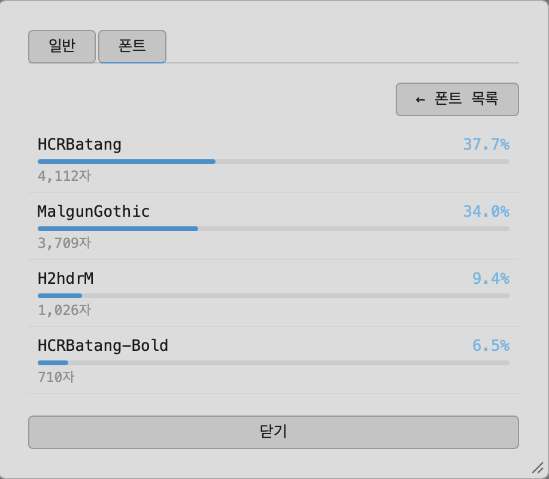

폰트 사용 비율 분석
Cmd+I로 문서 정보 창을 열고 폰트 탭으로 가면, 문서에 박힌 폰트 목록과 각 폰트가 실제로 쓰인 문자 수를 볼 수 있습니다.
사용 비율 분석
폰트 목록만으로는 "많이 쓰였는지 아주 조금 쓰였는지" 알 수 없습니다. "사용 비율 분석"을 누르면 문서 전체를 훑어서 폰트별 문자 수 대비 비율을 계산해줍니다. 분량이 많은 문서는 시간이 걸릴 수 있어 진행 상황이 표시되고, 언제든 중지할 수 있습니다.
